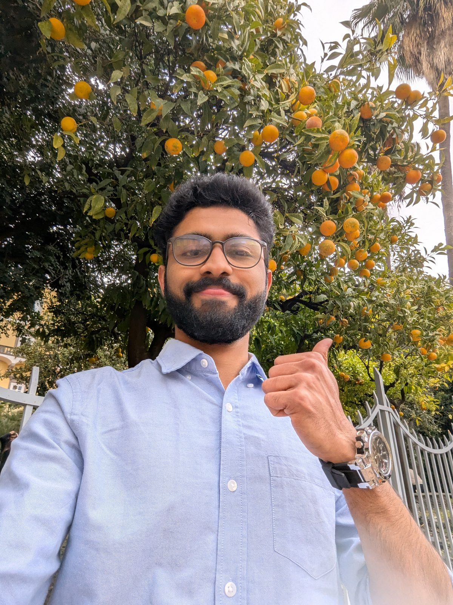
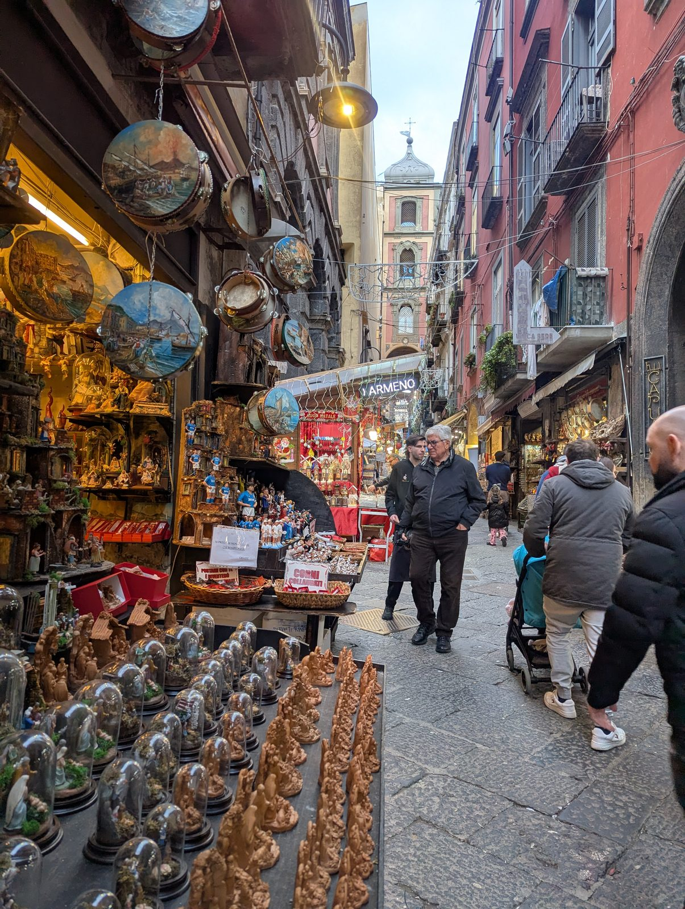
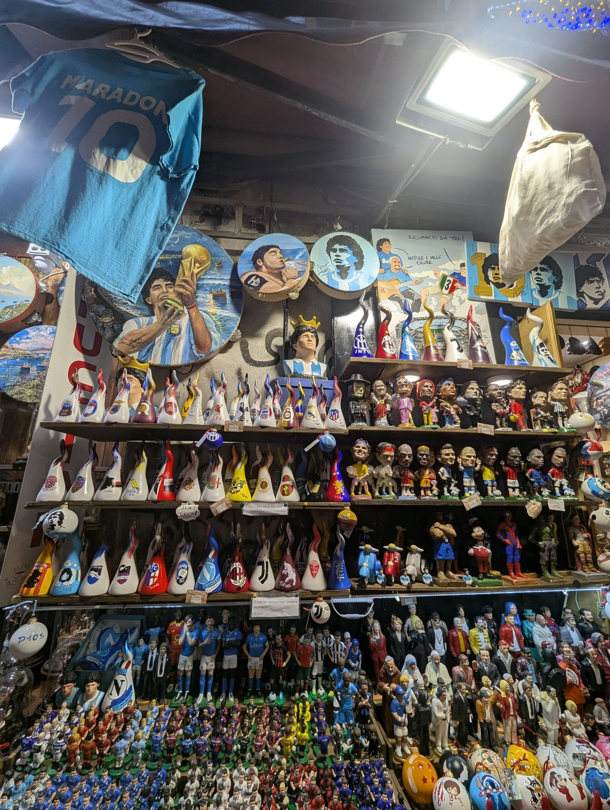
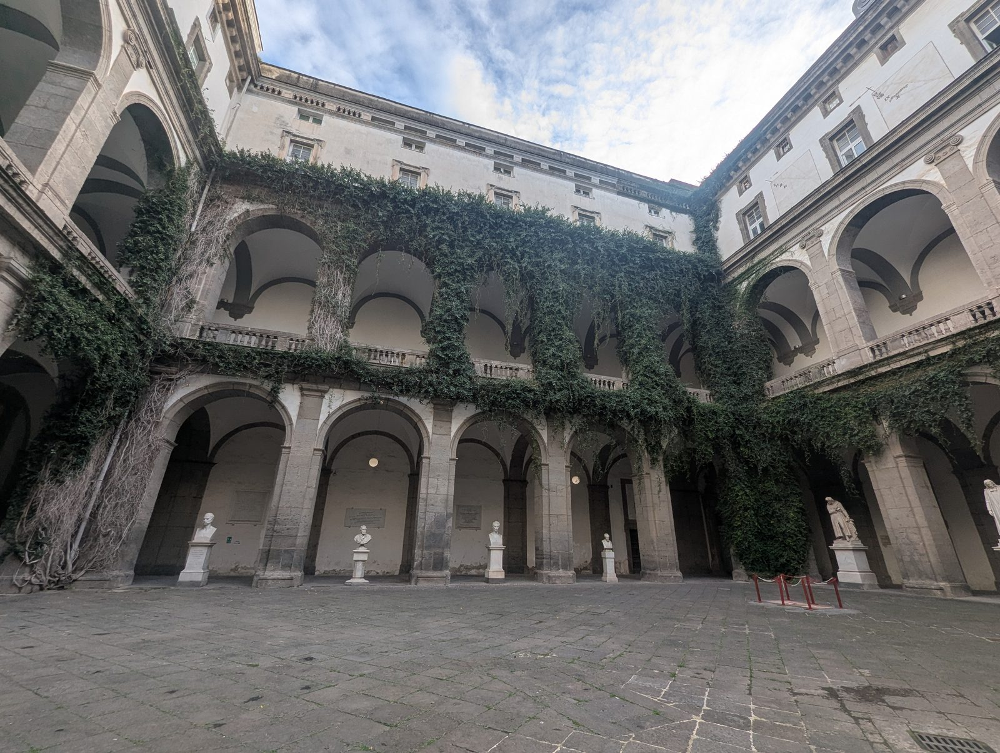
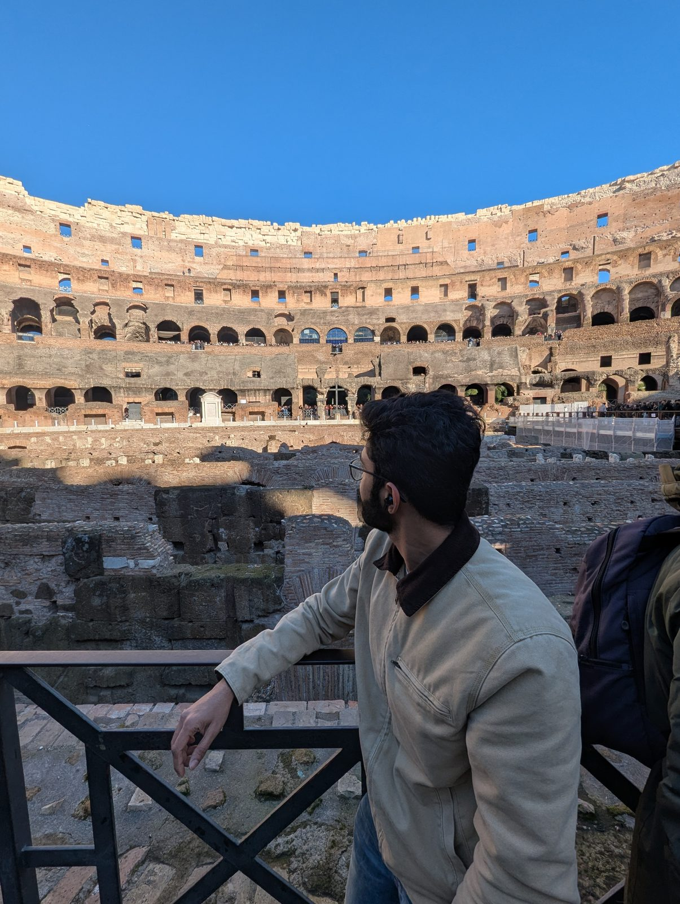
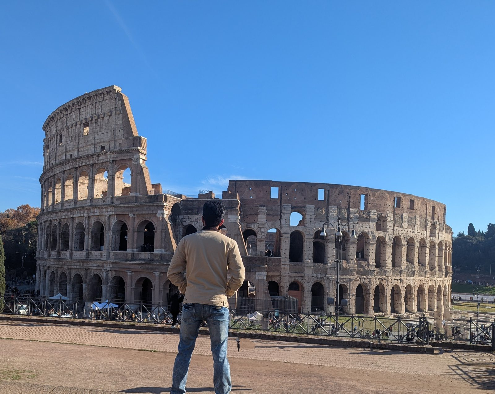
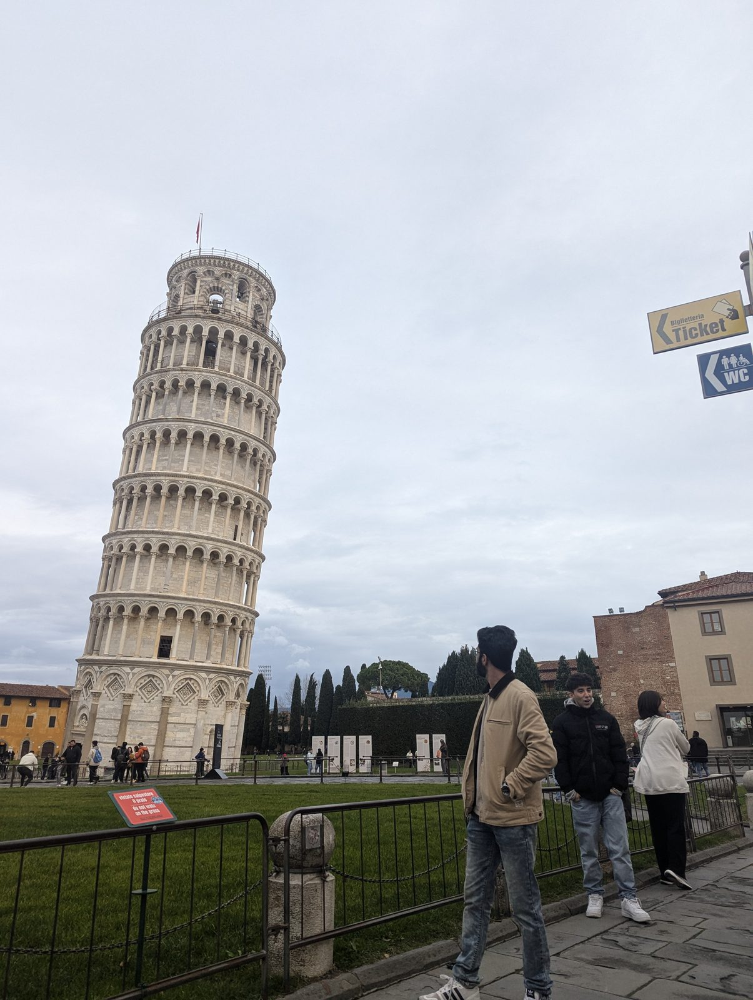

The conference
The trip began in Naples, where I'd come to attend a conference.
Eating my way through Naples
With the conference attended, it was time to explore the cuisine of Naples.
On to Rome
Next I moved on to Rome and explored the city.
Pisa
After Rome came Pisa.
Ending in Milan
And from Pisa, I went on to Milan.






